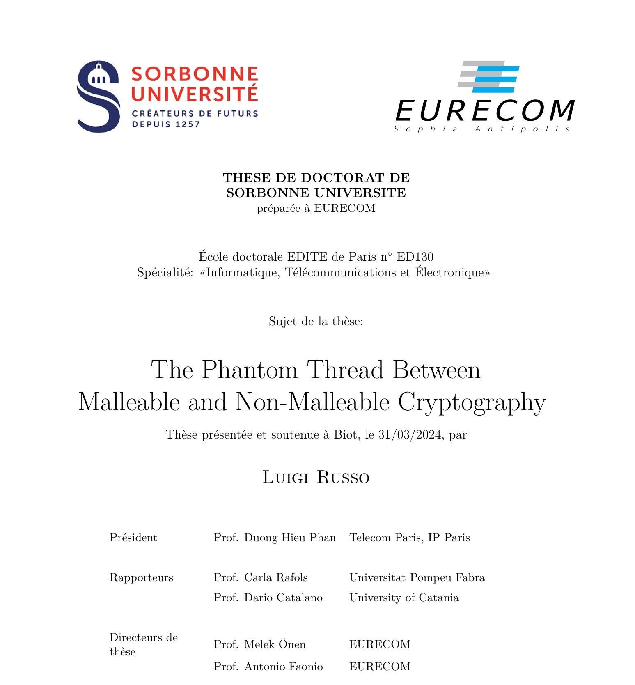

The Phantom…

Hôm qua làm chủ sò cho một buổi bảo vệ tiến sỹ hay như một vở kịch. Có lẽ kịch tính không kém gì "The Phantom of the Opera".
Liệu thế giới có đang bị điều khiển bởi một Phantom? Những gì chúng ta thấy chỉ là bề nổi, với những phát ngôn, những hành động kỳ lạ của những kẻ có khả năng điều khiển và thay đổi thế giới, của những tay tài phiệt giàu có nhất thế giới? Hoá ra tất cả chỉ là con rối cho một Phantom đằng sau hậu trường chưa ai biết mặt.
Sau đây là một tiết lộ hội thoại của Phantom với Trump, Musk và Sam cách đây đúng 1 năm - cùng ngày cùng giờ.
Phantom: Trump, ngươi đủ thông minh để hiểu, không thắng cử sẽ vào tù và đế chế gia đình sụp đổ.
Trump: phải làm sao, ta có 7 tỉ và sẵn sàng chi hết để mua phiếu.
Phantom: không ăn thua, nhưng ngươi sẽ đắc cử và nhân gấp 7 lần tài sản. Cái ngươi cần là truyền thông và AI - những thứ sẽ tạo ra một simulation world kéo vào đó trên 50% cử tri.
Trump: Musk đã sẵn chờ, hắn bảo ta không có quân bài nào, và ra giá quá cao. Hắn sẽ khống chế ta nếu ta dựa vào hắn để thắng cử.
Phantom: hãy thỏa mãn mọi điều kiện của Musk, hãy cho hắn thỏa chí tung tẩy trong Nhà Trắng khi ngươi thắng cử. Cách duy nhất kiềm chế được hắn là chỉ có Sam. Hãy hứa cho Sam ngang với những gì hứa cho Musk, chúng sẽ kiềm tỏa nhau - Musk công khai và Sam âm thầm, và ngươi sẽ đứng vững. Nếu không làm thế, ngươi sẽ chỉ là con rối trong tay 1 trong hai kẻ đó.
Trump: deal done!
Phantom vào hang, nơi có cả Musk và Sam.
Phantom: Trump sẽ thỏa mãn mọi điều kiện của bọn bay.
Musk: vâng thưa ngài, tôi hiểu là sẽ phải đóng vai đối lập với Sam. Chỉ có sự đối lập mới tạo lòng tin cho Trump.
Sam: Musk, mỗi khi anh đăng đàn chửi tôi thì chúng ta đều lên giá. Nhưng đừng làm quá, tôi không muốn là nhân vật phản diện dẫn dắt thế giới tới việc làm nô lệ cho AI. Người muốn điều đó nhất chính là anh.
Musk: Đừng chỉ trích tôi, chúng ta không có cách nào tốt hơn. Mấy năm rồi, để AI thông minh lên thì số công nhân dữ liệu làm việc khốn khổ tăng 30 lần từ 10 triệu lên 300 triệu mà không ai hay biết. Tôi sẽ giữ truyền thông, thỉnh thoảng tung Viruss và nổ Pháo, để nó có tăng ngần ấy lần cũng không ai để ý. Tuyệt đại đa số con người sẽ phải ngu đi để AI thông minh hơn. Tất nhiên tất nhiên, luôn cần có số ít hưởng lợi để luôn to mồm nói về lợi ích phổ cập của AI - phổ cập cho tới … người Mohican cuối cùng.
Sam: khi nào?
Musk: sớm thôi, ngay khi anh hoàn thiện AGI và tôi hoàn thiện kế hoạch 1001. Chúng ta sẽ cùng công bố nó trên quảng trường sao hỏa. Yes yes, sao Hỏa!
Phan-tom: yêu cầu duy nhất của ta là các anh cần mời Trump và Putin trong số 1001 kẻ thông minh nhất trái đất đó. Sao Hoả! Đó hẳn là nơi phân định lại thế giới mới.
SaM: deal done.
Có một điều bản thân Phantom cũng không thể lường trước, đó là còn một thế giới khác nữa đứng trong bóng của Phantom. Mà bóng của bóng lại chính là ngoài ánh sáng: bóng đó đang hiện diện trong thế giới thực. Phan-tom trong lời nói cuối trên kia, giúp đưa 1001 kẻ "thông minh nhất" lên Sao Hỏa khai trương thế giới mới với AGI, đã âm thầm cắt đường về. Giữ yên cho trái đất.
Nhưng liệu thế giới có đến được điểm cân bằng hay không phụ thuộc vào một cuộc chiến kỳ lạ mà chi tiết sẽ được trình chiếu vào một ngày không xa.
Không xa, ngày này giờ này - ngày Cá tháng Tư - năm sau.
+-